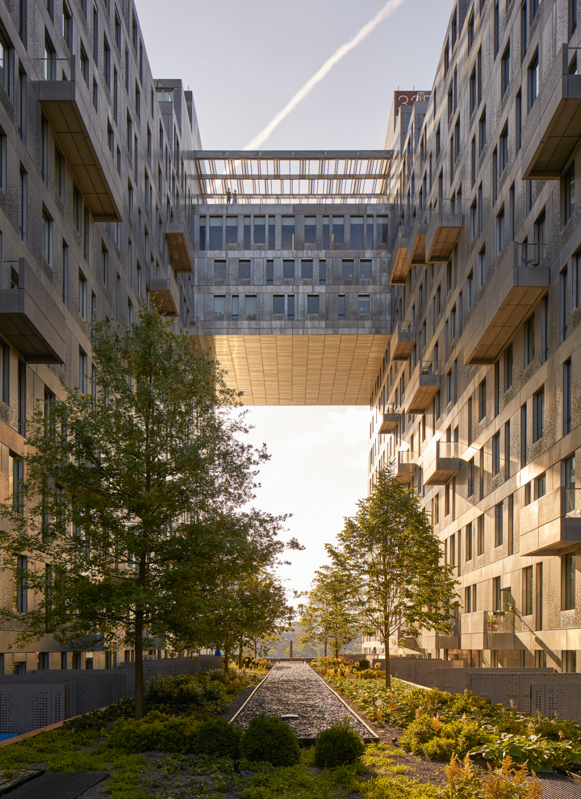
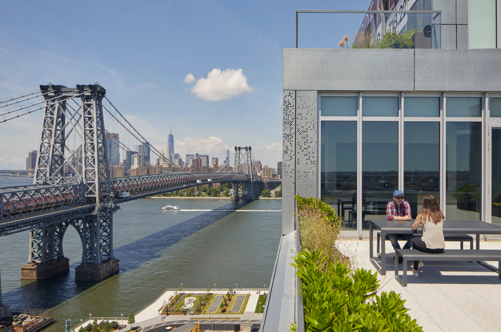
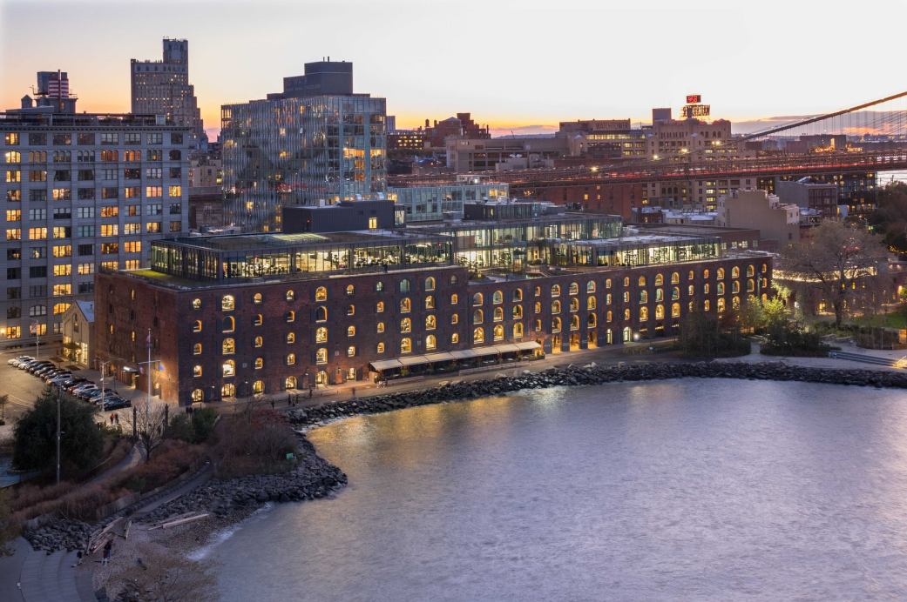
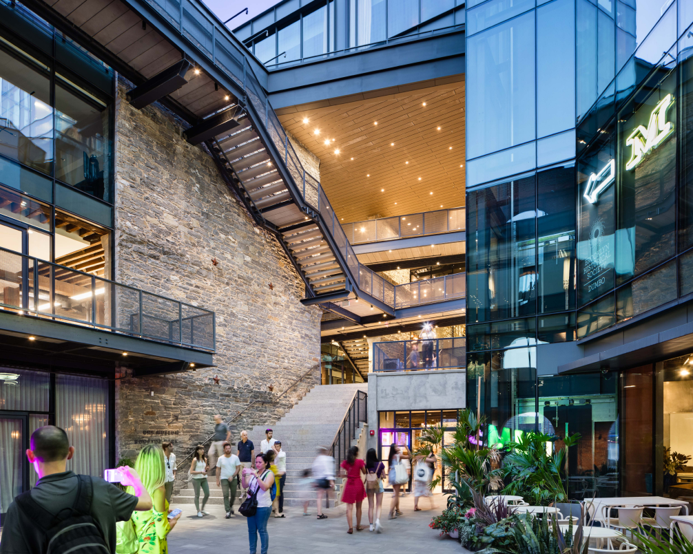
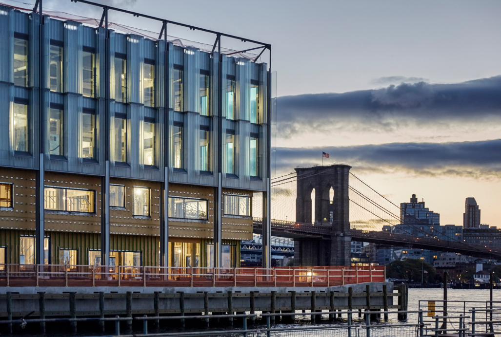

ARTICLE
Finally: A Waterfront Worthy of New York City
This article was originally pushlished on the Architizer Journal in July 2019

From the recent completion of South Street Seaport’s Pier 17 and the exciting progress of Domino Park to the repurposed beauty that is Empire Stores, new developments are changing the architectural narrative of New York City’s waterfront.
Until the mid 20th century, the piers surrounding lower Manhattan were vital organs in a complex and fragile system. Spreading uninterrupted from the tip of Manhattan, the piers extended outwards like fingers — receiving the world in the form of break bulk cargo vessels and passenger liners.
The future of Manhattan’s docks was left as a big question mark with the rise of large container shipping and shifting economic conditions post 1950. Over a span of more than half a century, the question mark unraveled into a reality of its own — a reality that only recently has provided a hotbed for thoughtful architectural plans which serve to diversify New York’s valuable coastline.
The repurposing of the Domino Sugar Factory property which includes the newly completed park along the East River revamped a plot of Brooklyn which sat idle in an otherwise thriving neighborhood underneath the Williamsburg Bridge. The project, a collaborative effort by James Corner Field Operations (also responsible for the design of The High Line, Domino Park and the public realm at Manhattan West) and SHoP Architects (Domino Park, Pier 17, 15, 35, 42 and Hunter’s Point South) demonstrated a new wave of enthusiasm towards the development of the East River.
The architectural plan includes four new buildings in addition to a repurposing of the historic Domino Sugar Refinery into office spaces. Originally built in 1856, the structure will undergo a series of changes, the most dramatic being a large glass roof which sits in contrast to the original red brick structure.
The abandoned waterfront properties that dot the shoreline of the Hudson and East River sit as humbling reminders of the swift decline in maritime trade around the turn of the century. These derelict buildings were not only an eye-sore, but physically separated the interior from its shoreline — the city’s raison d’être.
In 1986 the New York Times printed an article documenting a shift in the economics of the NYC harbor. The awareness of the opportunity to develop ports, outlined in the article titled “New York Port Changes with Shifting Economy”, seemed at odds with the lack of action and initiative taken to develop the waterfront in the decade following.
However, until the 2000s, the large plots of land once dictated by maritime trading served as more of a challenge than an opportunity. Developers attempting to maximize public and private use of the properties consistently ran into hurdles: state and federal regulations, community opposition, environmental concerns and zoning rules were just a few.
Despite the obstacles, large architectural firms have drawn on an expansive network of professionals to seize a window of opportunity. Through creative collaborations, they are slowly forging a path for the future of a comprehensive, repurposed urban waterfront.
The increase in urgency to repurpose unused areas is reflective of the healthy profit margin that is expected of waterfront developments after completion. However, the large-scale designs must provide a healthy balance between commercial and public interests. The Domino Sugar development achieved this through the incorporation of an impressive five-acre public park. Similarly, the 500,000 square foot restored Empire Stores warehouse built in 1869 now boasts a public courtyard which cuts through the building, reconnecting the neighborhood with the waterfront in addition to a public rooftop park.
 In the historic South Street Seaport, Pier 17 has been rebuilt to accommodate a multi-use 400,000 square foot site where culture, arts, shopping, dining and events run the show. Overlooking the East River with grand views of the Brooklyn Bridge to the north, Pier 17 previously drew in tourists, rather than resident New Yorkers. The reclaimed space has given the waterfront a face-lift, but more importantly, it has given new purpose back to this historic area.
In the wake of decades where logistical obstacles had a firm grasp on waterfront progress, residents, developers and city officials now have no shortage of examples that demonstrate how healthy compromise can transform the shores of New York City into a space for everyone to enjoy. The take-away from the long, winding road to re-develop this vital portion of New York City is that, while there are no shortage of challenges, the process can yield a result that gives the waterfront a comeback it deserves.
Written by Georgia Hough
Originally published by Architizer Inc.
Photo Courtesy: Architizer Database, STUDIO V Architecture and Ty Cole